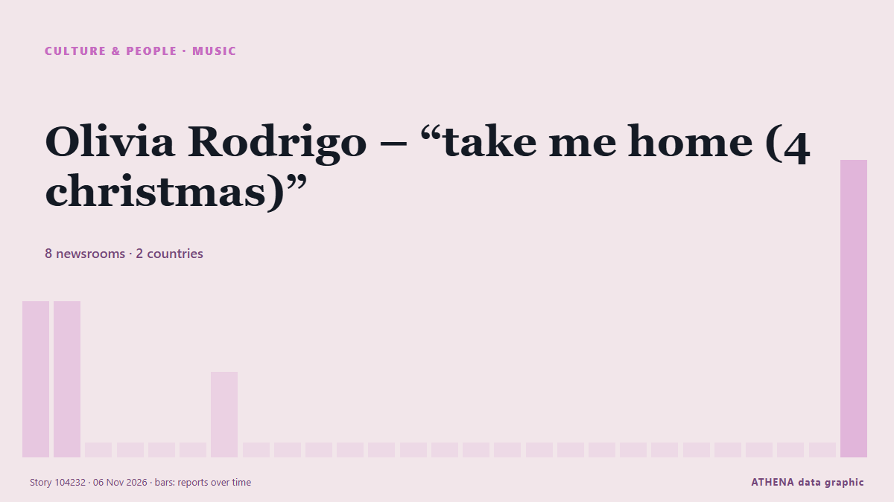

الموسيقى
برعايةبرعاية  Cybernetics and Artificial Intelligence Lab Welcome to the Cybernetics and Artificial Intelligence Laboratory, established at the Department of Business Administration of the National and Kapodistrian University of Athens. The lab is headed by Professor Dimitrios Thomakos. The lab aims to do research that can be published in top venues. Our research uses tools and methods of Artificial Intelligence, and lies in the following areas: - Forecasting - Decision making - Cyber security - Finance We are always looking forward to collaborating with exceptional students!
Cybernetics and Artificial Intelligence Lab Welcome to the Cybernetics and Artificial Intelligence Laboratory, established at the Department of Business Administration of the National and Kapodistrian University of Athens. The lab is headed by Professor Dimitrios Thomakos. The lab aims to do research that can be published in top venues. Our research uses tools and methods of Artificial Intelligence, and lies in the following areas: - Forecasting - Decision making - Cyber security - Finance We are always looking forward to collaborating with exceptional students!
| 24 أكتوبر | 0 |
|---|---|
| 25 أكتوبر | 0 |
| 26 أكتوبر | 0 |
| 27 أكتوبر | 0 |
| 28 أكتوبر | 0 |
| 29 أكتوبر | 0 |
| 30 أكتوبر | 2 |
| 31 أكتوبر | 0 |
| 1 نوفمبر | 0 |
| 2 نوفمبر | 3 |
| 3 نوفمبر | 8 |
| 4 نوفمبر | 7 |
| 5 نوفمبر | 3 |
| 6 نوفمبر | 0 |
تُعرض العناوين بالإنجليزية كما نُشرت.

Olivia Rodrigo – “take me home (4 christmas)”
Olivia Rodrigo is getting in the holiday spirit. من Variety
Bethel SDA Osu hosts third edition of ‘The King Is Coming’ concert
Bethel Seventh-day Adventist Church, Osu, will host the third edition of its The King Is Coming concert on Saturday, November 7, 2026, under the theme “Babylon Is Fallen”. من MyJoyOnline
CMAT releases Christmas song with Elton John
Elton John has teamed up with CMAT for a new version of his festive hit single Step Into Christmas. من RTÉ News
Seven Games Like GTA That Do Some Things Better Than Grand Theft Auto
The label “GTA clone” often makes open-world crime games sound like cheap copies of Grand Theft Auto, but several titles have developed strengths that Rockstar’s series does not always match. من Colombia One
Makhadzi Stuck in Botswana Until 5th November
South African musician Makhadzi remains unable to leave Botswana as a P500,000 legal dispute with promoter Gilbert PP Seagile heads to court on 5 November, with her lawyers challenging the order… من The Botswana Gazette
US copyright lawsuit over BTS song 'Swim' dropped
American songwriters who earlier claimed that South Korean superband BTS' chart-topping song "Swim" was copied from their own demo have withdrawn their claims in a US lawsuit, a report showed… من Korea Herald
Sithelo Shozi welcomes baby girl with Zimbabwean husband
IOL “The Masked Singer South Africa” detective Sithelo Shozi is officially a mother of four. من NewZimbabwe
Best Memes and TikToks After Midterms’ Blue Wave, From Regina George to ‘The Office’ References
After Democrats flipped the U.S. House and Senate, some people took to social media to express their euphoric feelings as well as take jabs at Donald Trump. من The Hollywood Reporter
Harry Styles dresses as viral ‘pizza rat’ for final Madison Square Garden show
His band continued the theme by dressing up as New York City landmarks and references. من Evening Standard (London)
My Chemical Romance Leads ‘Parade’ of Reissues Marching Onto Billboard 200 Albums Chart
On the new Billboard Pop Shop Podcast, Katie & Keith are taking a closer look at re-released albums from Beyoncé, The Beatles, Mac Miller & more. من Billboard
Christine And The Queens – “Rendez-vous Avec Toi”
“Rendez-vous avec toi” arrives alongside an English counterpart, “Rendez-vous in your arms” من Pitchfork news
Pixies share unearthed classic tracks from ‘Bossanova’ and ‘Trompe le Monde’ eras
They date back to 1987 and have been released on streaming platforms for the first time. من NME
Kennedy Center Honorees Class Of 2026: Paul Anka, David Foster, Andy Garcia, David Mamet & Barbara Mandrell
One day ahead of D.C.’s Big Day, we have the latest recipients of the annual Kennedy Center Honors. من Deadline
Burnham told ‘you’re a musician’ after playing steel drum in Caribbean
The Prime Minister and Foreign Secretary Ed Miliband duetted on a version of Mary Had A Little Lamb. من The Irish News (Belfast)
‘Beds Are Burning,’ ‘Friday on My Mind’ Among First Songs Inducted Into Australia’s National Songbook
An initiative of APRA AMCOS and NFSA, the project preserves “the songs that have helped shape Australia’s cultural identity.” من Billboard
Music and dance carry on friendship stories along ancient Silk Road in Dunhuang
Inspired by a 2,000-year-old archaeological discovery, the large-scale production brings together more than 80 performers to tell a story of love, friendship and cultural encounters through dance… من to vima
Toluwanisings’ wife, father, others sign peace undertaking
The Oyo State Police Command has brokered peace between the family and associates of late Nigerian singer Olayemi Bayonle Bolaji, popularly known as Toluwanisings, following disagreements over his… من Vanguard
Rock star Bruce Springsteen warns against government interference in US midterms
Springsteen, known for his tracks Born To Run and Dancing In The Dark, is a vocal Trump critic. من The Straits Times